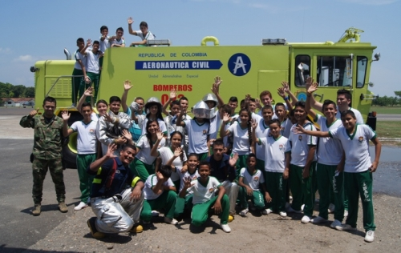

Pilotos por un dia

Integrantes de la Banda Sinfónica de La Dorada Caldas fueron “Pilotos por un día”
14 de Marzo de 2015
Los 56 niños músicos que componen esta Banda Musical, visitaron las instalaciones del Comando Aéreo de Combate No.1, ubicado en el municipio de Puerto Salgar (Cundinamarca), donde se alejaron por un momento de sus instrumentos y se dejaron guiar por un grupo de oficiales y suboficiales orgánicos de esta Unidad Aérea que los llevaron a conocer la misión y la visión de la Fuerza Aérea. Son jóvenes entre los grados sexto y once del Instituto Técnico Alfonso López, que han sobresalido no solo por su rendimiento académico, sino también por su talento artístico, logrando con ello hacer parte de una de las Bandas Sinfónicas Estudiantiles más reconocidas a nivel nacional, reflejado en sus resultados, ocupando los primeros puestos con la mejor obra inédita interpretada en el Festival de Bandas en la Vega Cundinamarca en el 2014. Este grupo de músicos pasaron una mañana diferente, divertida y conocieron un poco más acerca de la labor que cumplen los hombres y mujeres de la Fuerza Aérea Colombiana. Con el Liderazgo del Departamento de Acción Integral los jóvenes tuvieron la oportunidad de conocer el Centro de Instrucción Militar (CIMIL), donde se capacita el personal militar de la Fuerza Pública en áreas como paracaidismo, cursos de combate y rescate. Así mismo, se les dio un recorrido por el Grupo de Seguridad y Defensa de la Bases Aéreas No. 15, conociendo el trabajo que realizan los Soldados de Aviación y el proceso de adiestramiento de los semovientes caninos quienes son parte vital de la seguridad de la comunidad con la detección de explosivos y narcóticos en puestos de control y registro en los que participan a diario. Los Bomberos Aeronáuticos también hicieron parte de esta jornada, por medio de ellos conocieron cuales son los elementos necesarios al momento de realizar un rescate y salvar una vida. Finalmente se realizó la exposición estática de las aeronaves con las que cuenta esta importante Unidad Aérea. La Base Aérea Germán Olano continuará abriendo estos espacios de participación, que nos permita continuar construyendo lazos de amistad y cooperación con la población civil, porque “Estamos en el corazón de los colombianos y ahí nos vamos a quedar”.